Tutorial 4: Plotting
Generate publication-ready plots with scpviz. Most plotting functions accept a matplotlib.axes.Axes as the first argument for flexible integration into multi-panel figures:
import matplotlib.pyplot as plt
from scpviz import plotting as scplt
fig, ax = plt.subplots(figsize=(4, 4))
scplt.plot_pca(ax, pdata, classes=["cellline", "condition"])
plt.show()
The sections below are organized by plot type. Full parameter documentation is in the API reference.
Summary and QC
-
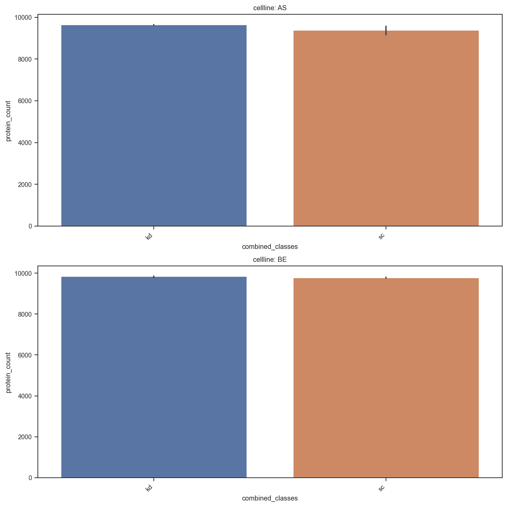
Bar chart of sample-level metadata counts.
-
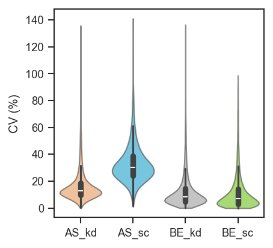
Coefficient of variation distributions per group.
plot_summary
import matplotlib.pyplot as plt
from scpviz import plotting as scplt
fig, ax = plt.subplots(figsize=(5, 3))
scplt.plot_summary(ax, pdata, classes=["cellline", "condition"])
plt.show()
plot_cv
Basic CV violins grouped by cell line and condition:
import matplotlib.pyplot as plt
from scpviz import plotting as scplt
fig, ax = plt.subplots(figsize=(3, 3))
scplt.plot_cv(ax, pdata, classes=["cellline", "condition"])
plt.show()
Sample counts below each violin and median CV above the plot:
fig, ax = plt.subplots(figsize=(3, 3))
scplt.plot_cv(
ax, pdata, classes=["cellline", "condition"],
show_n=True,
annotate="median",
annotate_kwargs={"fontsize": 7},
)
plt.show()
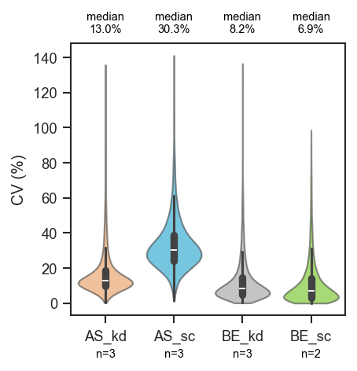
Custom per-group labels:
fig, ax = plt.subplots(figsize=(3, 3))
scplt.plot_cv(
ax, pdata, classes=["cellline", "condition"],
annotate={"AS_kd": "replicate set A"},
)
plt.show()
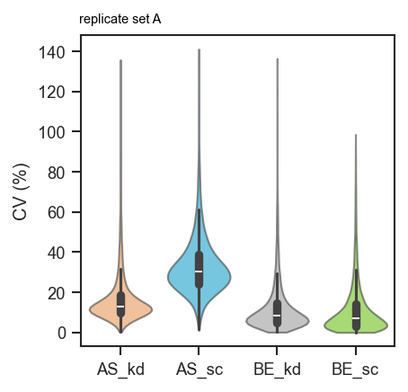
Export the underlying table (CV ratio and CV_pct percent columns):
Abundance
Overview
-
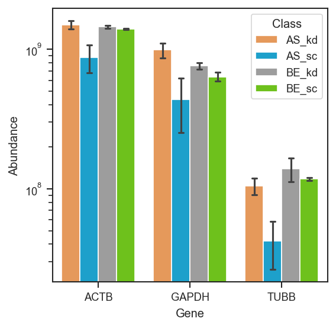
Violin/bar plots for named proteins.
-
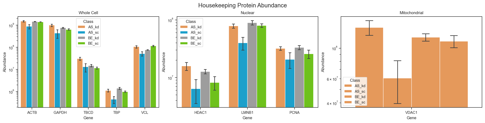
Built-in housekeeping gene panel.
-
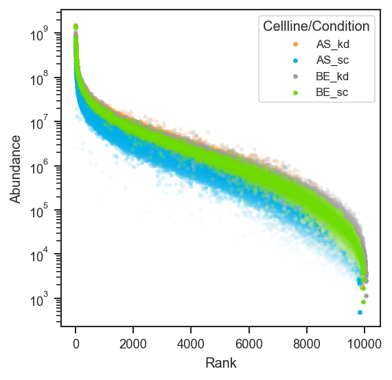
Proteome-wide rank abundance scatter.
-
Violin + box + strip combined distribution.
plot_abundance_boxgrid — plot type gallery
plot_abundance_boxgrid produces per-protein panels with consistent axes. Four plot_type options:
plot_abundance
import matplotlib.pyplot as plt
from scpviz import plotting as scplt
fig, ax = plt.subplots(figsize=(4, 4))
scplt.plot_abundance(ax, pdata, namelist=["GAPDH", "TUBB", "ACTB"], classes=["cellline", "condition"])
plt.show()
plot_abundance_boxgrid
Called as a method on pdata; returns (fig, axes).
Box
fig, axes = pdata.plot_abundance_boxgrid(
namelist=["GAPDH", "TUBB", "ACTB"],
classes=["cellline", "condition"],
plot_type="box",
figsize=(2, 2.5),
)
plt.show()
Bar
fig, axes = pdata.plot_abundance_boxgrid(
namelist=["GAPDH", "TUBB", "ACTB"],
classes=["cellline", "condition"],
plot_type="bar",
bar_error="sd",
figsize=(2, 2.5),
)
plt.show()
Line
fig, axes = pdata.plot_abundance_boxgrid(
namelist=["GAPDH", "TUBB", "ACTB"],
classes=["cellline", "condition"],
plot_type="line",
show_n=True,
figsize=(2, 2.5),
)
plt.show()
Violin
fig, axes = pdata.plot_abundance_boxgrid(
namelist=["GAPDH", "TUBB", "ACTB"],
classes=["cellline", "condition"],
plot_type="violin",
figsize=(2, 2.5),
)
plt.show()
Significance brackets
Pass sig_pairs to run pairwise tests and draw significance bars (same group-spec format as plot_volcano / de()). Use return_df=True to also receive the abundance table and a stats_df of p-values.
Per cell line — compare sc vs kd within BE and within AS:
fig, axes, df, stats = pdata.plot_abundance_boxgrid(
namelist=["GAPDH", "TUBB", "ACTB"],
classes=["cellline", "condition"],
sig_pairs=[
({"cellline": "BE", "condition": "sc"}, {"cellline": "BE", "condition": "kd"}),
({"cellline": "AS", "condition": "sc"}, {"cellline": "AS", "condition": "kd"}),
],
sig_kwargs={"fontsize": 8},
return_df=True,
)
plt.show()
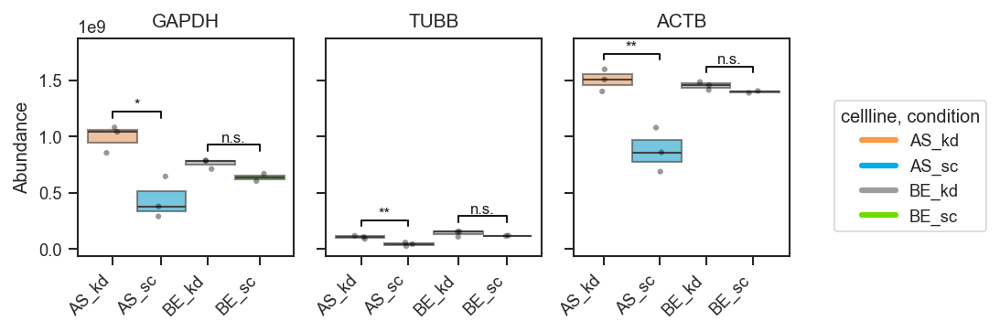
Shared group across pairs — the same group can appear in multiple comparisons (brackets stack vertically):
fig, axes = pdata.plot_abundance_boxgrid(
namelist=["GAPDH", "TUBB", "ACTB"],
classes=["cellline", "condition"],
sig_pairs=[
({"cellline": "BE", "condition": "sc"}, {"cellline": "BE", "condition": "kd"}),
({"cellline": "BE", "condition": "kd"}, {"cellline": "AS", "condition": "kd"}),
],
sig_kwargs={"fontsize": 8},
)
plt.show()
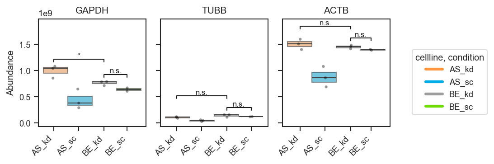
Two groups only — when a single classes column has exactly two levels, use sig_pairs=True:
fig, axes = pdata.plot_abundance_boxgrid(
namelist=["GAPDH"],
classes="treatment",
sig_pairs=True,
)
plt.show()
sig_kwargs defaults include sig_test ("ttest", "mannwhitneyu", or "wilcoxon") and sig_equal_var; remaining keys are passed to plot_significance. Groups with no detectable abundance are labeled ND and skipped for testing. See the API reference for plot_abundance_boxgrid and annotate_abundance_boxgrid_significance.
plot_abundance_housekeeping
A quick normalization sanity check using the built-in housekeeping gene list.
fig, ax = plt.subplots(figsize=(5, 4))
scplt.plot_abundance_housekeeping(ax, pdata, classes=["cellline", "condition"])
plt.show()
plot_rankquant and mark_rankquant
plot_rankquant API ↗ · mark_rankquant API ↗
plot_rankquant ranks each protein by mean abundance and shows per-group scatter clouds — useful for comparing proteome coverage and dynamic range across conditions.
import matplotlib.pyplot as plt
from scpviz import plotting as scplt
fig, ax = plt.subplots(figsize=(4, 4))
scplt.plot_rankquant(ax, pdata, classes=["cellline", "condition"])
plt.show()
Works the same on single-cell protein data after directlfq (use whichever .obs column you use for UMAP, e.g. region):
fig, ax = plt.subplots(figsize=(4, 4))
scplt.plot_rankquant(ax, pdata_sc, classes=["region"])
plt.show()
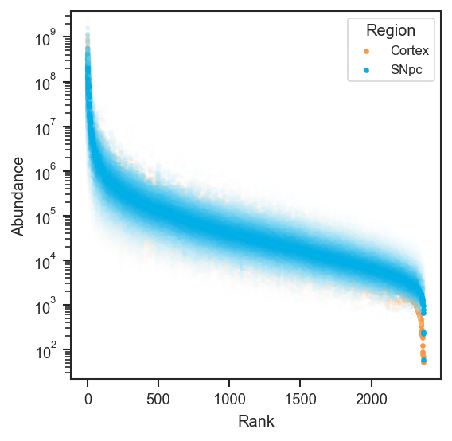
mark_rankquant overlays specific proteins. mark_df requires an accession column and optionally gene_primary:
import pandas as pd
from scpviz import utils as scu
classes_2 = ["cellline", "condition"]
class_list = scu.get_classlist(pdata.prot, classes_2)
acc = list(pdata.prot.var_names[:3])
mark_df = pd.DataFrame({"accession": acc})
if "Genes" in pdata.prot.var.columns:
mark_df["gene_primary"] = pdata.prot.var.loc[acc, "Genes"].astype(str).values
fig, ax = plt.subplots(figsize=(4, 4))
scplt.plot_rankquant(ax, pdata, classes=classes_2)
scplt.mark_rankquant(
ax, pdata, mark_df=mark_df,
class_values=class_list[:4],
color="black", label_type="gene",
)
plt.show()
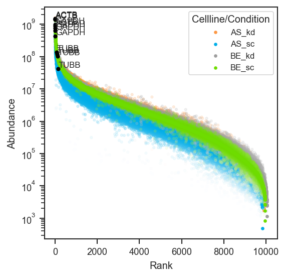
You can also build mark_df from a set-intersection query — see Set operations.
plot_raincloud and mark_raincloud
plot_raincloud API ↗ · mark_raincloud API ↗
plot_raincloud combines violin, box, and strip in one panel. Pass one color per combined class (the default color=['blue'] is too short when classes has more than one column):
import matplotlib.cm as cm
from scpviz import utils as scu
classes_2 = ["cellline", "condition"]
rain_colors = [cm.tab10(i % 10) for i in range(len(scu.get_classlist(pdata.prot, classes_2)))]
fig, ax = plt.subplots(figsize=(5, 4))
scplt.plot_raincloud(ax, pdata, classes=classes_2, color=rain_colors)
plt.show()
Single-cell version (same pattern; align classes with your UMAP coloring):
classes_sc = ["region"]
rain_colors = [cm.tab10(i % 10) for i in range(len(scu.get_classlist(pdata_sc.prot, classes_sc)))]
fig, ax = plt.subplots(figsize=(5, 4))
scplt.plot_raincloud(ax, pdata_sc, classes=classes_sc, color=rain_colors)
plt.show()
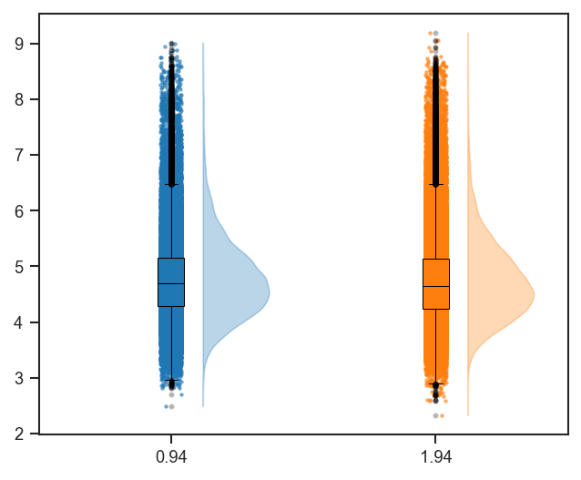
mark_raincloud accepts the same mark_df format as mark_rankquant:
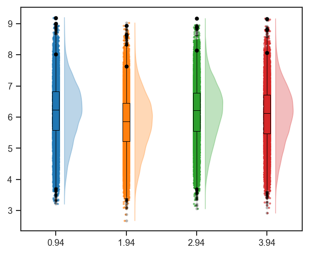
Dimension reduction
Overview
-
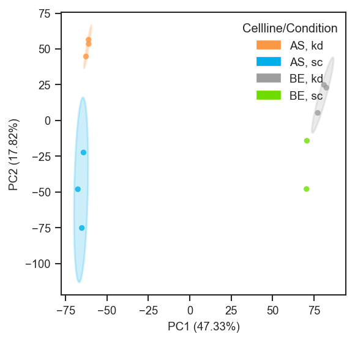
PCA scatter with optional ellipses.
-
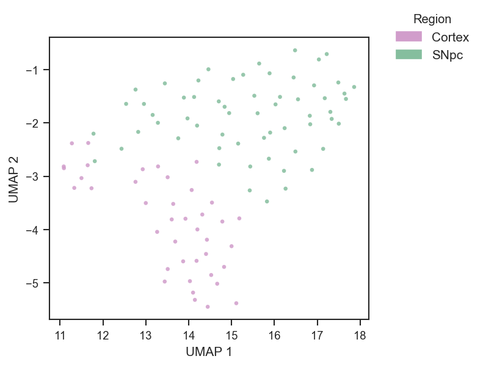
UMAP projection for single-cell data.
-
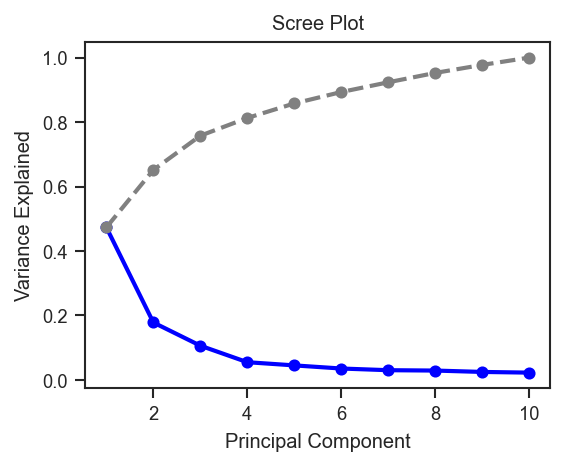
Variance explained per PC.
-
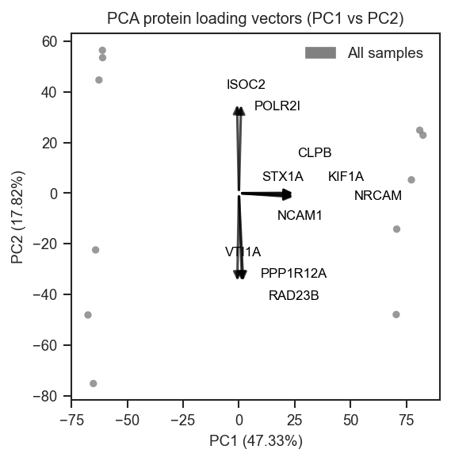
Top protein loadings overlaid on PCA.
plot_pca
plot_pca API ↗ · plot_pca_protein_vectors API ↗
plot_pca runs PCA (or reuses cached results) and renders a scatter. Supports categorical and continuous coloring, edge colors, marker shapes, 3D projections, confidence ellipses, and tuple-key mapping.
import matplotlib.pyplot as plt
from scpviz import plotting as scplt
fig, ax = plt.subplots(figsize=(4, 4))
pdata_norm.pca(on="protein")
scplt.plot_pca(ax, pdata_norm, classes=["cellline", "condition"], add_ellipses=True)
plt.show()
On single-cell data after directlfq:
fig, ax = plt.subplots(figsize=(4, 4))
pdata_sc.pca(on="protein")
scplt.plot_pca(
ax, pdata_sc,
color=["region"],
cmap={"Cortex": "#D19DCB", "SNpc": "#85BE9E"},
add_ellipses=True,
)
plt.show()
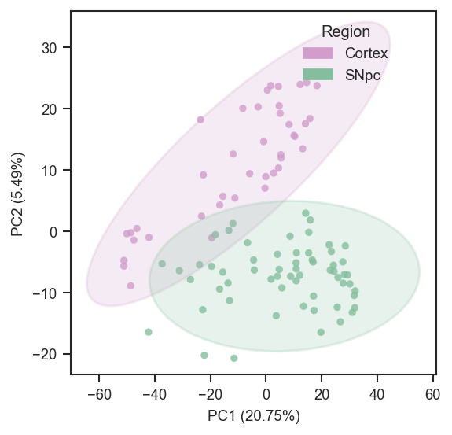
Abundance coloring (colorbar_norm, nan_color)
Pass a gene or protein name to color= for continuous face coloring; a colorbar is added automatically. Cells with zero, NaN, or negative abundances are drawn in nan_color (default lightgrey) beneath the colormap-mapped points.
colorbar_norm controls the scale on strictly positive abundances: None or "linear" uses auto limits; "log10" / "log2" apply log normalization with colorbar ticks at powers of 10 or 2; pass a matplotlib.colors.Normalize subclass (e.g. LogNorm(vmin=, vmax=)) for explicit limits. Override the colorbar title with colorbar_label.
For sparse single-cell data, an explicit LogNorm can stabilize the colorbar (i.e. manually set limits of the colorbar):
import matplotlib.colors as mcolors
scplt.plot_pca(
ax, pdata_sc,
color="GAPDH",
cmap="plasma",
colorbar_norm=mcolors.LogNorm(vmin=1, vmax=1e7),
nan_color="black",
)
The same parameters apply to plot_umap.
Tuple-key mapping
For studies with crossed metadata columns, plot_pca (and plot_umap) accept a mapping dict keyed by metadata combinations. Multi-column keys are tuples; a single column may use string keys. This assigns colors, edge colors, and marker shapes without pre-encoding a combined column:
mapping_keys = ["cellline", "condition"]
mapping = {
("AS", "kd"): {"color": "white", "edge_color": "black"},
("AS", "sc"): {"color": "white", "edge_color": "steelblue"},
("BE", "kd"): {"color": "lightgrey", "edge_color": "black"},
("BE", "sc"): {"color": "lightgrey", "edge_color": "steelblue"},
}
fig, ax = plt.subplots(figsize=(4, 4))
scplt.plot_pca(ax, pdata_norm, mapping_keys=mapping_keys, mapping=mapping, force=True)
scplt.shift_legend(ax)
plt.show()
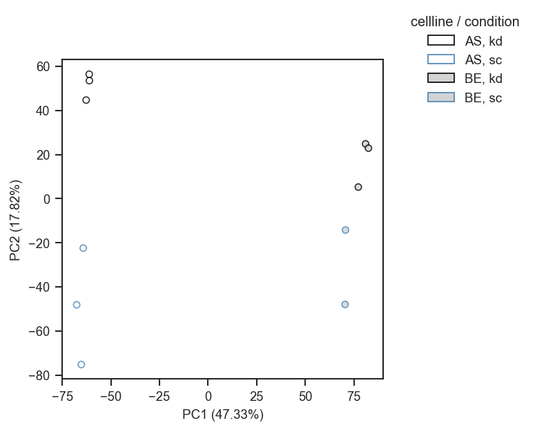
mapping_keys = ["region"]
mapping = {
"Cortex": {"edge_color": "#D19DCB"},
"SNpc": {"edge_color": "#85BE9E"},
}
fig, ax = plt.subplots(figsize=(4, 4))
scplt.plot_pca(
ax, pdata_sc, color="Gapdh", cmap="plasma",
mapping_keys=mapping_keys, mapping=mapping, force=True,
)
scplt.shift_legend(ax)
plt.show()
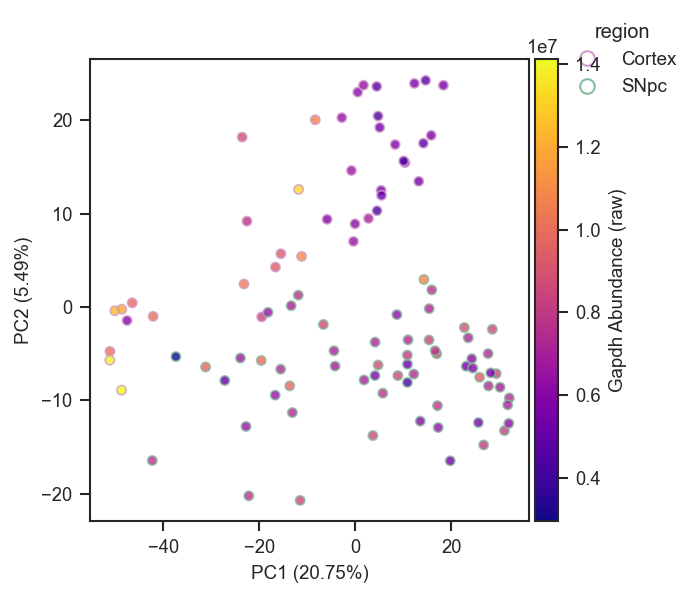
Combinations missing from mapping default to grey face with no edge. Pass mapping_on_missing="raise" to require all combinations to be present.
Sequential overlay (3D PCA)
Reuse one embedding and layer subsets with subset_mask (order matters). Example for HCT116 treatment/time overlays:
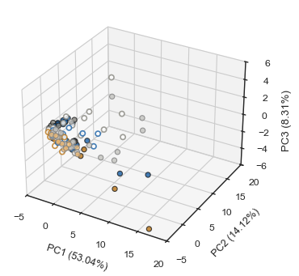
PCA Protein Vectors
plot_pca_protein_vectors overlays the top protein loadings as arrows:
fig, ax = plt.subplots(figsize=(4, 4))
pdata_norm.pca(on="protein")
scplt.plot_pca_protein_vectors(ax, pdata_norm, n_vectors=10)
plt.show()
PCA-GSEA enrichment
We can also perform GSEA on the protein loadings per PC and visualize them in pathway vectors, bubble or heatmap style.
plot_pca_gsea_pathway_vectors, plot_pca_gsea_bubble, and plot_pca_gsea_heatmap overlay GSEA pathway results on PCA space — these functions automatically run pdata.pca_gsea() and plot using that data.
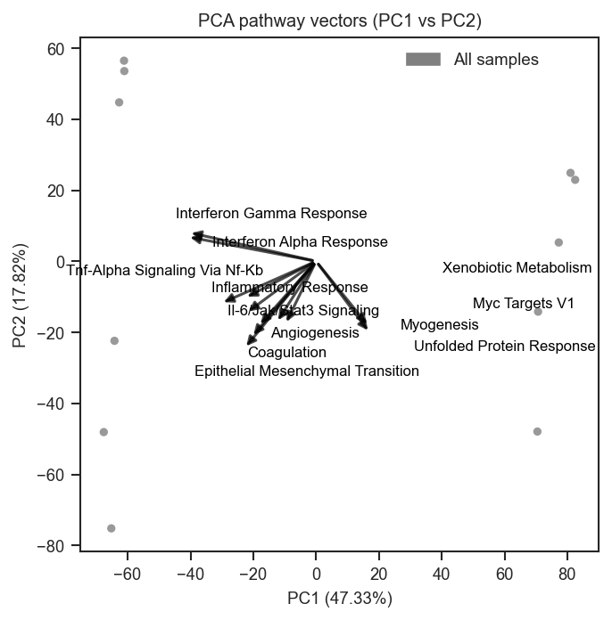
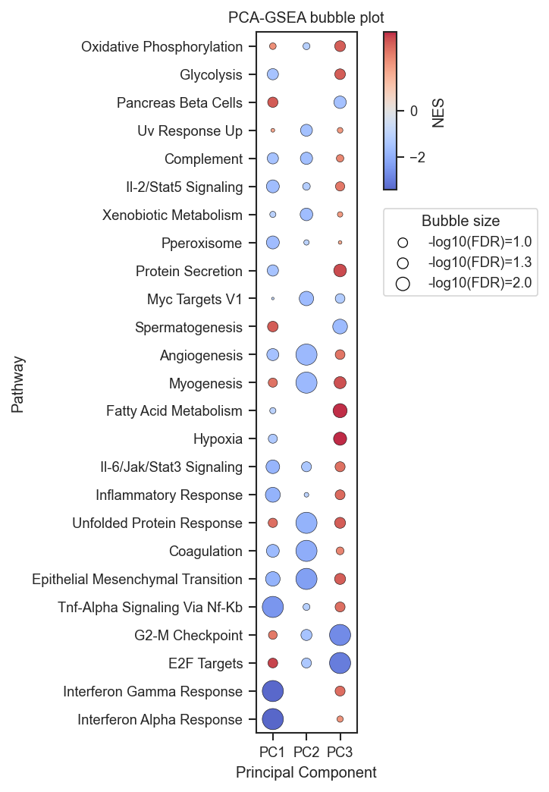
fig, ax = plt.subplots(figsize=(6, 8))
scplt.plot_pca_gsea_bubble(ax, pdata_norm, pcs=[1, 2, 3], top_n=25)
plt.show()
Optional size controls: size_scale sets max bubble diameter as a fraction of cell pitch (default 0.85); size_fdr_cap clips -log10(FDR) used for sizing (default 5.0). Use pc_pad to widen/narrow gaps between PC columns (half-spacing; default 0.6). cbar_scale multiplies NES colorbar height (1 = default; <1 shorter, >1 taller); the size legend stays stacked under it.
fig, ax = plt.subplots(figsize=(6, 8))
scplt.plot_pca_gsea_bubble(
ax,
pdata_norm,
pcs=[1, 2, 3],
top_n=25,
size_scale=0.5, # tighter bubbles
size_fdr_cap=10, # more extreme FDR contrast
pc_pad=0.75, # wider gaps between PC columns
cbar_scale=1.5, # taller NES colorbar
)
plt.show()
Colorbar height comparison (cbar_scale = 0.5 / 1 / 1.5):
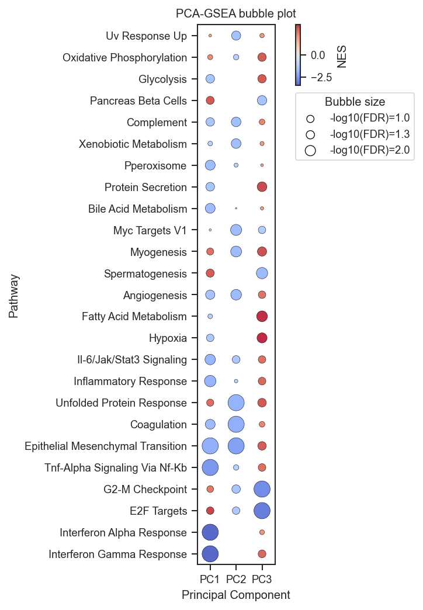
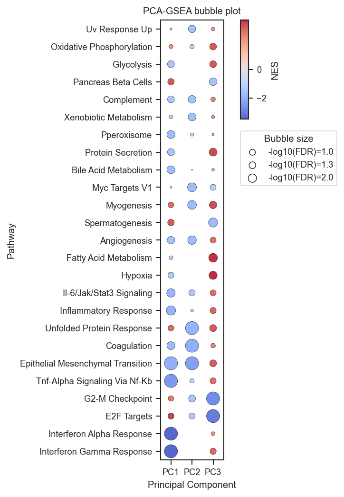
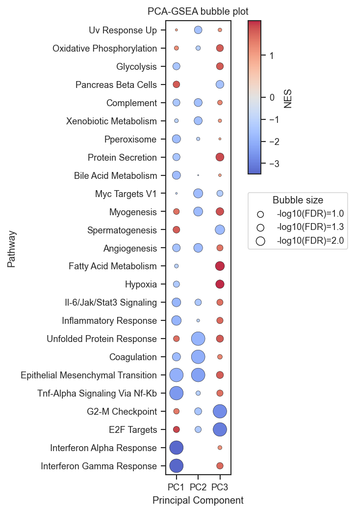
We can also plot similarly using a heatmap.
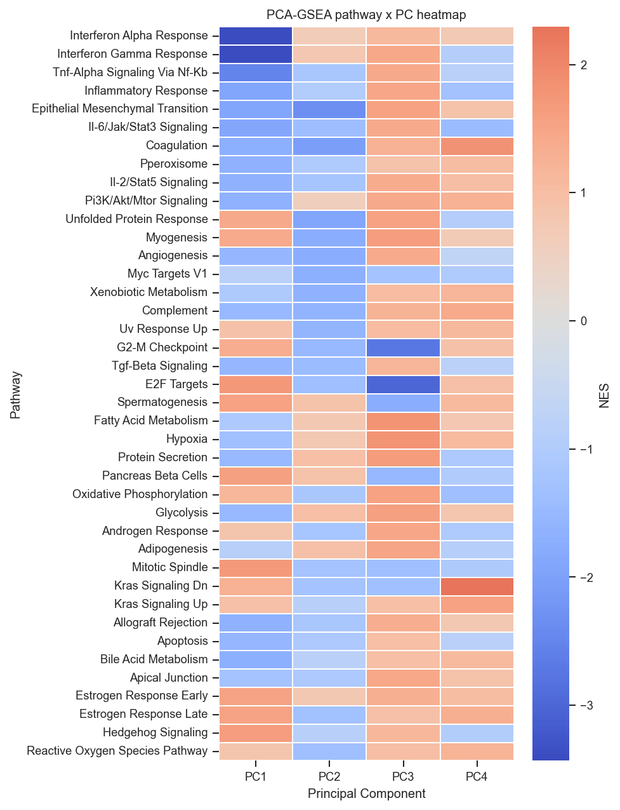
plot_pca_scree
fig, ax = plt.subplots(figsize=(4, 3))
scplt.plot_pca_scree(ax, pdata_norm.prot.uns["pca"])
plt.show()
plot_umap
plot_umap mirrors the plot_pca interface. Pass force=True on first call or after changing normalization.
import matplotlib.pyplot as plt
from scpviz import plotting as scplt
fig, ax = plt.subplots(figsize=(4.5, 4))
pdata_sc.pca(on="protein")
scplt.plot_umap(
ax, pdata_sc,
color=["region"],
cmap={"Cortex": "#D19DCB", "SNpc": "#85BE9E"},
force=True,
umap_params={"min_dist": 0.3, "n_neighbors": 30, "random_state": 42},
s=10, alpha=0.85,
)
scplt.shift_legend(ax)
plt.show()
plot_umap accepts the same abundance-coloring options as PCA — see Abundance coloring. On single-cell data after directlfq (mouse gene Gapdh):
fig, ax = plt.subplots(figsize=(4.5, 4))
pdata_sc.pca(on="protein")
scplt.plot_umap(
ax, pdata_sc,
color="Gapdh",
cmap="plasma",
colorbar_norm="log10",
nan_color="grey",
force=True,
umap_params={"min_dist": 0.3, "n_neighbors": 30, "random_state": 42},
s=10, alpha=0.85,
)
plt.show()
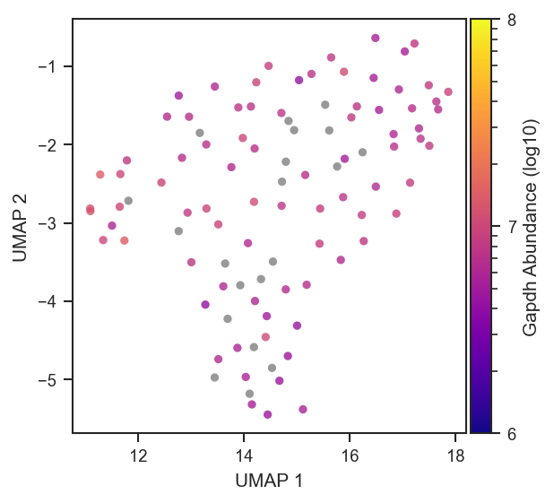
Correlation and clustering
Overview
-
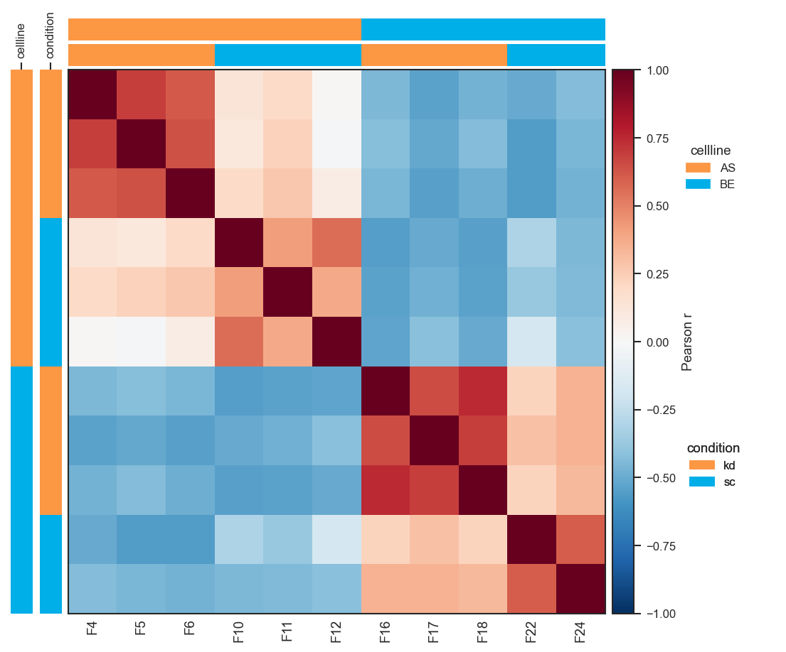
Sample × sample Pearson/Spearman heatmap.
-
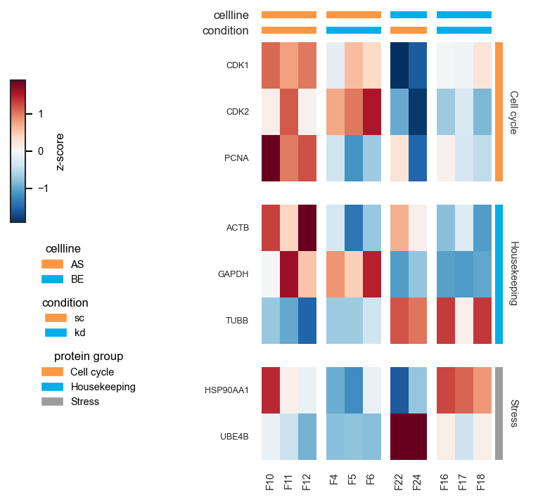
Curated protein-group blocks × samples with header strips.
-
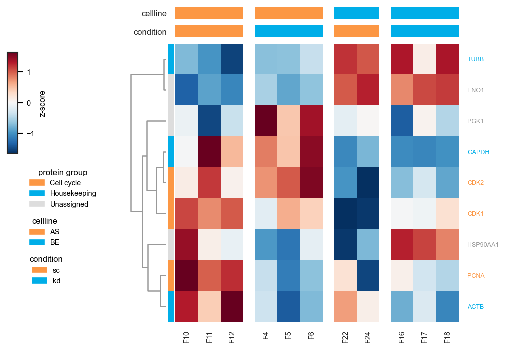
Hierarchically clustered proteins × samples with optional group strip.
-
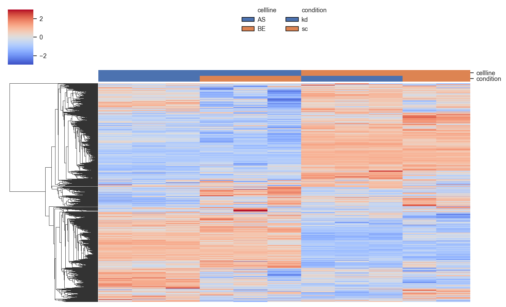
Legacy seaborn clustered heatmap with annotation bars.
plot_pairwise_correlation
plot_pairwise_correlation generates a sample × sample (or group × group) correlation heatmap. Computing a per-protein z-score layer first produces more interpretable results:
import matplotlib.pyplot as plt
import numpy as np
from scpviz import plotting as scplt
from scpviz import utils as scu
adata = scu.get_adata(pdata_norm, "protein")
X = np.asarray(scu.get_adata_layer(adata, "X"), dtype=float)
mu = np.nanmean(X, axis=0, keepdims=True)
sig = np.nanstd(X, axis=0, keepdims=True)
sig = np.where(np.isfinite(sig) & (sig > 0), sig, 1.0)
adata.layers["X_pw_zscore"] = (X - mu) / sig
fig, ax = scplt.plot_pairwise_correlation(
pdata_norm,
classes=["cellline", "condition"],
method="pearson",
show_samples=True,
layer="X_pw_zscore",
force=True,
)
plt.show()
Same approach on single-cell data (align classes with your UMAP coloring):
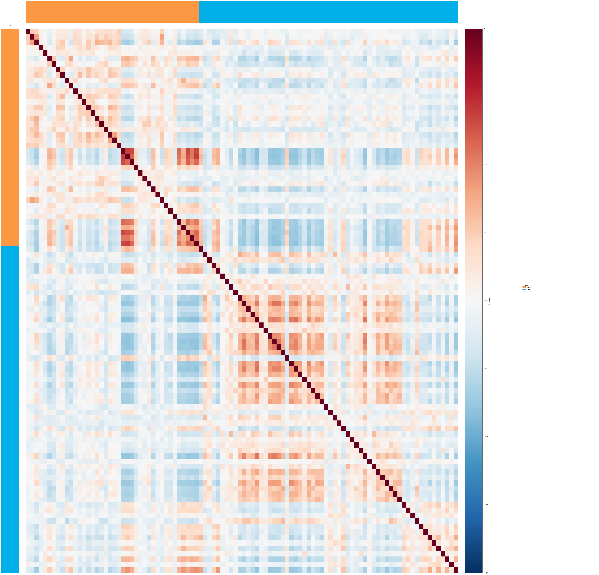
plot_grouped_heatmap
plot_grouped_heatmap draws curated protein groups as spatial blocks (with optional gaps), sample header strips from classes, and a right-hand group colour bar. Proteins missing from the object still keep a grey row so block sizes stay stable.
Horizontal white gaps between sample leaf blocks (same full classes combination) default on via column_spacing=True (half a content cell). Vertical gaps between protein groups use the same scale via row_spacing=True. Use False/0 for none, or a float to scale that default (0.5 = half, 2 = double). Header-to-heatmap space is header_spacing (default 0.06). Header band thickness is header_height (default 0.35, relative GridSpec height). Grouped side-bar thickness is group_bar_width (default 0.4, sample-column units; pair with group_bar_pad).
from scpviz import plotting as scplt
fig = scplt.plot_grouped_heatmap(
pdata_norm,
protein_groups={
"Cell cycle": ["CDK1", "CDK2", "PCNA"],
"Housekeeping": ["GAPDH", "TUBB", "ACTB"],
"Stress": ["HSP90AA1", "UBE4B"],
},
classes=["cellline", "condition"],
sort_by={"cellline": ["AS", "BE"], "condition": ["sc", "kd"]},
layer="X",
figsize=(7, 5),
text_size=8,
)
Row / column / header spacing (row_spacing, column_spacing, header_spacing):
fig = scplt.plot_grouped_heatmap(
pdata_norm,
protein_groups={
"Cell cycle": ["CDK1", "CDK2", "PCNA"],
"Housekeeping": ["GAPDH", "TUBB", "ACTB"],
"Stress": ["HSP90AA1", "UBE4B"],
},
classes=["cellline", "condition"],
sort_by={"cellline": ["AS", "BE"], "condition": ["sc", "kd"]},
row_spacing=0.75,
column_spacing=0.5,
header_spacing=0.08,
)
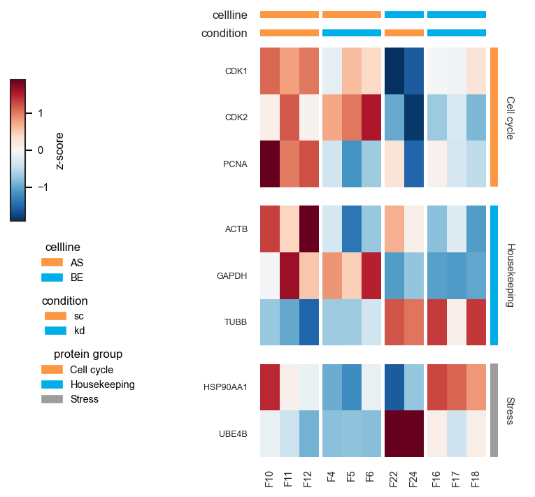
Header colours are one strip per class (not one colour per class combination). With a single class you can pass a flat map; with multiple classes nest by class name:
# Single class
header_colors = {"sc": "#55A868", "kd": "#C44E52"}
# Multiple classes
header_colors = {
"cellline": {"AS": "#4C72B0", "BE": "#DD8452"},
"condition": {"sc": "#55A868", "kd": "#C44E52"},
}
plot_clustered_heatmap
plot_clustered_heatmap hierarchically clusters protein rows. Provide exactly one of proteins= (explicit list) or stats_key= (DE / volcano table in pdata.stats). Optional protein_groups annotate rows with a colour strip (not spatial blocks). Same column_spacing / header_spacing semantics as the grouped heatmap.
from scpviz import plotting as scplt
fig = scplt.plot_clustered_heatmap(
pdata_norm,
classes=["cellline", "condition"],
proteins=[
"CDK1", "CDK2", "PCNA",
"GAPDH", "TUBB", "ACTB",
"HSP90AA1", "ENO1", "PGK1",
],
protein_groups={
"Cell cycle": ["CDK1", "CDK2", "PCNA"],
"Housekeeping": ["GAPDH", "TUBB", "ACTB"],
},
sort_by={"cellline": ["AS", "BE"], "condition": ["sc", "kd"]},
show_unassigned=True,
figsize=(7, 5),
text_size=8,
)
Column / header spacing:
fig = scplt.plot_clustered_heatmap(
pdata_norm,
classes=["cellline", "condition"],
proteins=[
"CDK1", "CDK2", "PCNA",
"GAPDH", "TUBB", "ACTB",
"HSP90AA1", "ENO1", "PGK1",
],
protein_groups={
"Cell cycle": ["CDK1", "CDK2", "PCNA"],
"Housekeeping": ["GAPDH", "TUBB", "ACTB"],
},
sort_by={"cellline": ["AS", "BE"], "condition": ["sc", "kd"]},
column_spacing=0.5,
header_spacing=0.08,
show_unassigned=True,
)
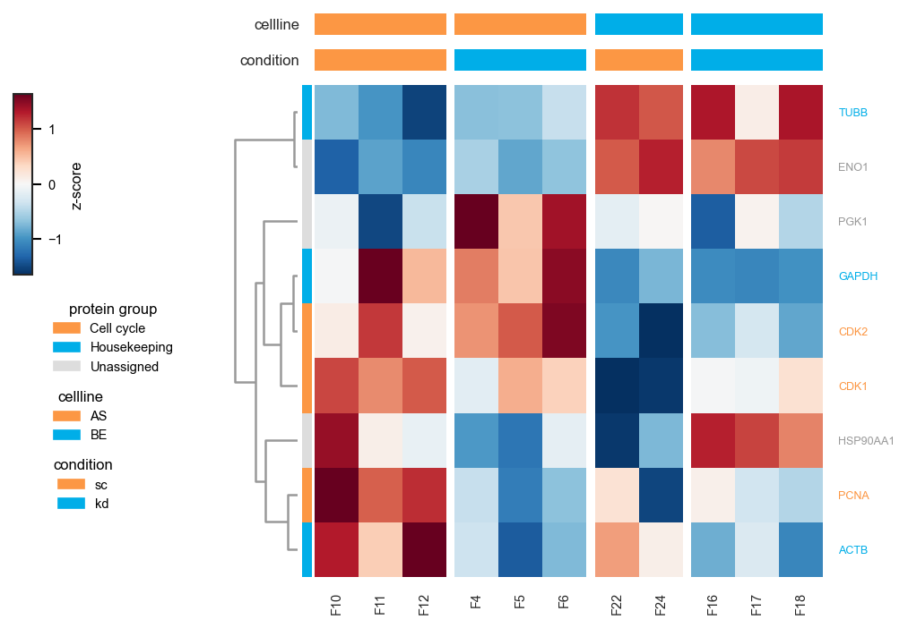
After plot_volcano / de, cluster significant hits. For a readable figure, keep a top-N subset (same approach as docs/generate_plot_figures.py):
import matplotlib.pyplot as plt
from scpviz import plotting as scplt
values = [
{"cellline": "BE", "condition": "kd"},
{"cellline": "BE", "condition": "sc"},
]
fig, ax = plt.subplots(figsize=(4, 4))
ax, volcano_df = scplt.plot_volcano(
ax, pdata_norm, values=values, return_df=True
)
# Prefer the stats key written by volcano/de when present
de_key = None
de_df = volcano_df
for k, v in (getattr(pdata_norm, "stats", {}) or {}).items():
if (
hasattr(v, "columns")
and "significance" in v.columns
and "significance_score" in v.columns
):
de_key = k
de_df = v
break
if de_key is None:
de_key = "volcano_de"
pdata_norm.stats[de_key] = de_df
hits = de_df[de_df["significance"].isin(["upregulated", "downregulated"])]
top40 = (
hits.assign(_s=hits["significance_score"].abs())
.sort_values("_s", ascending=False)
.head(40)
)
slim_key = f"{de_key} (top 40)"
pdata_norm.stats[slim_key] = top40
fig = scplt.plot_clustered_heatmap(
pdata_norm,
classes=["cellline", "condition"],
stats_key=slim_key,
sort_by={"cellline": ["AS", "BE"], "condition": ["sc", "kd"]},
figsize=(7, 6),
text_size=7,
)
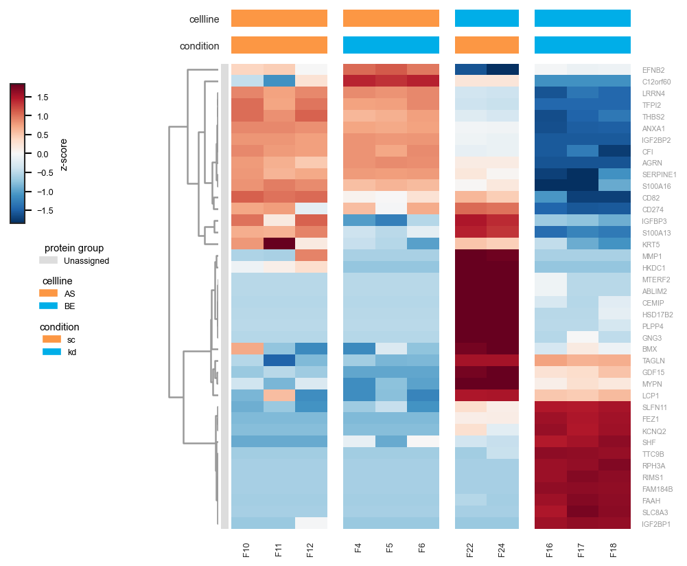
plot_clustermap
plot_clustermap returns a seaborn ClusterGrid object (g), not a figure — call g.savefig(...) if saving. Prefer plot_clustered_heatmap for new publication figures.
import matplotlib.pyplot as plt
from scpviz import plotting as scplt
fig, ax = plt.subplots(figsize=(1, 1))
g = scplt.plot_clustermap(
ax, pdata_norm, on="prot",
classes=["cellline", "condition"],
force=True, impute="row_min",
z_score=0, center=0,
linewidth=0, figsize=(10, 6),
)
plt.show()
Custom annotation colors via a LUT dict:
import seaborn as sns
lut = {
"cellline": {"AS": "#e41a1c", "BE": "#377eb8"},
"condition": {"kd": "#4daf4a", "sc": "#984ea3"},
}
scplt.plot_clustermap(ax, pdata, classes=["cellline", "condition"], lut=lut, force=True)
Volcano plots
Overview
-
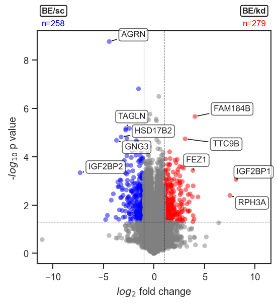
Volcano plot from a pAnnData comparison.
-
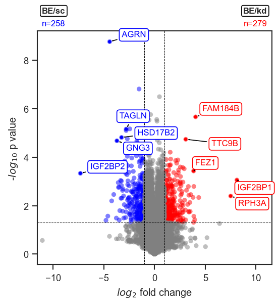
Color-coded highlights by DE direction.
-
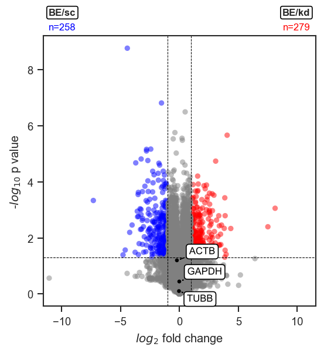
Highlight a fixed list in a single color.
-
volcano_adjust_and_outline_texts
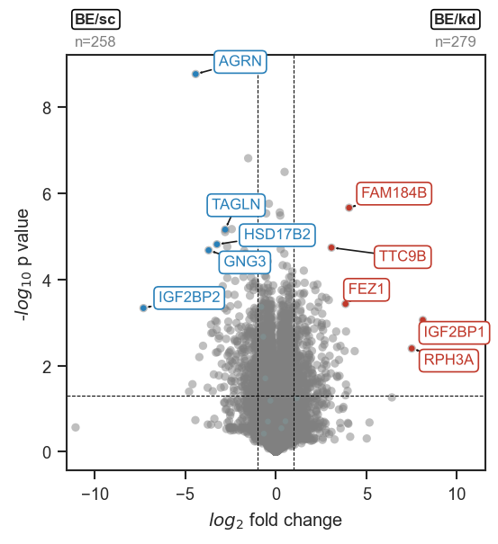
De-overlap text labels after marking.
plot_volcano
Groups are specified as a list of metadata dicts. The function runs DE internally and returns volcano_df when return_df=True:
import matplotlib.pyplot as plt
from scpviz import plotting as scplt
values = [
{"cellline": "BE", "condition": "kd"},
{"cellline": "BE", "condition": "sc"},
]
fig, ax = plt.subplots(figsize=(4, 4))
ax, volcano_df = scplt.plot_volcano(ax, pdata_norm, values=values, return_df=True)
plt.show()
Highlighting proteins
mark_volcano API ↗ · mark_volcano_by_significance API ↗ · volcano_adjust_and_outline_texts API ↗
Set no_marks=True to render all points grey, then layer highlights with mark_volcano_by_significance (color by DE direction) and/or mark_volcano (single color). Collect all texts lists and call volcano_adjust_and_outline_texts once at the end:
fig, ax = plt.subplots(figsize=(4, 4))
ax, volcano_df = scplt.plot_volcano(
ax, pdata_norm, values=values, return_df=True, no_marks=True
)
color_dict = {
"upregulated": "#E07B6A",
"downregulated": "#6AB4E0",
"not_significant": "#FFFFFF6A",
}
texts = []
ax, t = scplt.mark_volcano_by_significance(
ax, volcano_df,
label=["GAPDH", "TUBB", "ACTB", "VCP"],
color=color_dict, return_texts=True,
)
texts.extend(t)
ax, t = scplt.mark_volcano(
ax, volcano_df, label=["AHNAK"], label_color="orange", return_texts=True
)
texts.extend(t)
scplt.volcano_adjust_and_outline_texts(texts, expand=(1.5, 3))
plt.show()
Customizing group annotations
# Reposition up/down annotations
scplt.plot_volcano(
ax, pdata_norm, values=values,
group_annot_kwargs={"pos": {"group1_xy": (0.98, 1.10), "group2_xy": (0.02, 1.10)}},
up_kwargs={"fontsize": 9},
down_kwargs={"fontsize": 9},
)
# Remove bbox but keep text
scplt.plot_volcano(ax, pdata_norm, values=values, group_annot_kwargs={"bbox": None})
# Turn off all annotations
scplt.plot_volcano(ax, pdata_norm, values=values, group_annot=False)
add_volcano_legend adds standard up/down/not-significant legend handles to any axis:
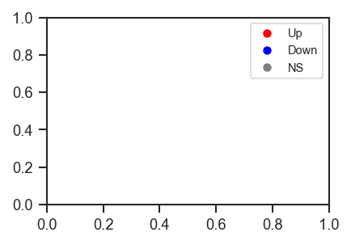
Set operations
Overview
-
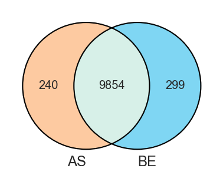
Venn diagram for 2–3 sets.
-
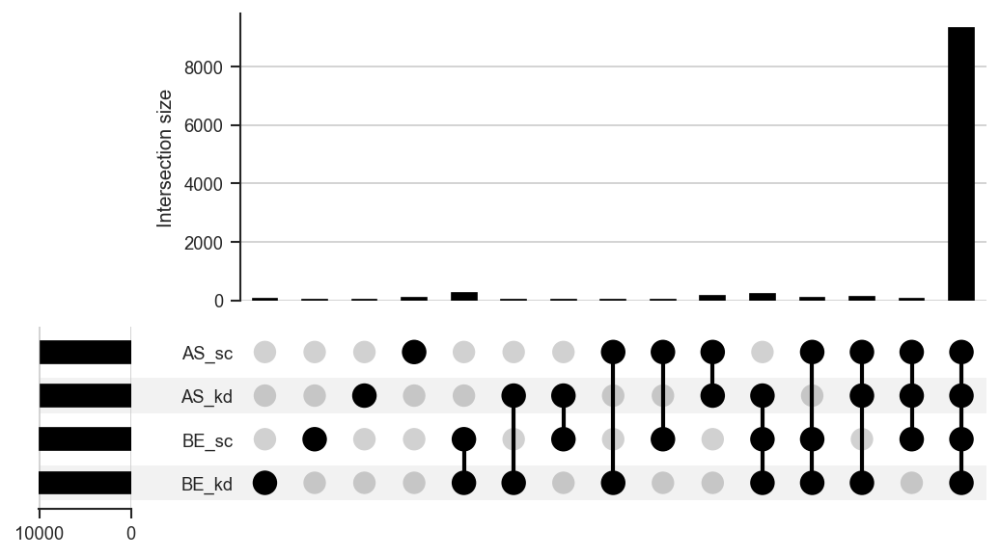
UpSet diagram for any number of sets.
-
plot_upsetstyled
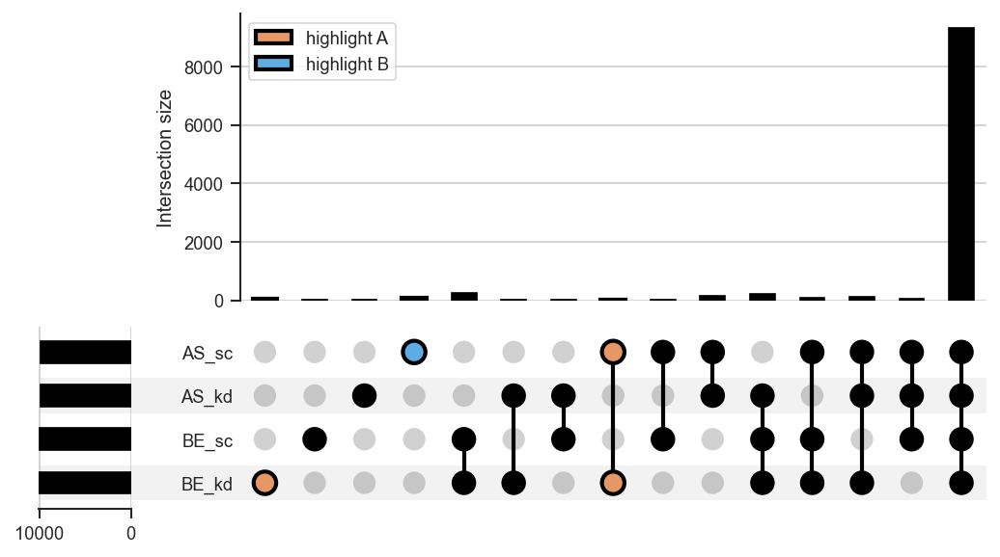
Highlight specific intersections with
style_subsets.
plot_venn
import matplotlib.pyplot as plt
from scpviz import plotting as scplt
fig, ax = plt.subplots(figsize=(3, 3))
scplt.plot_venn(ax, pdata, classes="cellline")
plt.show()
plot_upset
upplot = scplt.plot_upset(pdata, classes=["cellline", "condition"], show_counts=False)
upplot.plot()
plt.show()
Highlighting intersections with style_subsets: resolve category keys from get_upset_contents first, then style the intersections of interest:
from scpviz import utils as scu
contents = scu.get_upset_contents(pdata, classes=["cellline", "condition"], upsetForm=False)
keys = list(contents.keys()) # e.g. ['BE_kd', 'BE_sc', 'AS_kd', 'AS_sc']
upplot = scplt.plot_upset(pdata, classes=["cellline", "condition"], show_counts=False)
upplot.style_subsets(
present=["BE_kd"], absent=[k for k in keys if k != "BE_kd"],
edgecolor="black", facecolor="#E59866", linewidth=2, label="BE+kd only",
)
upplot.style_subsets(
present=["AS_sc"], absent=[k for k in keys if k != "AS_sc"],
edgecolor="black", facecolor="#5DADE2", linewidth=2, label="AS+sc only",
)
upplot.plot()
plt.show()
get_upset_query converts any intersection into a mark_df for use with mark_rankquant or mark_raincloud. Pass fetch_uniprot explicitly: use False for large sets (reads gene names from pdata only), or True to query UniProt for full metadata.
upset_data = scu.get_upset_contents(pdata, classes=["cellline", "condition"])
# Large intersection — skip UniProt (fast; uses .var gene names when available)
mark_df = scu.get_upset_query(
upset_data, present=["BE_kd"], absent=["AS_kd", "AS_sc", "BE_sc"],
fetch_uniprot=False, pdata=pdata,
)
# Small intersection — fetch UniProt metadata (e.g. for gene labels)
mark_df = scu.get_upset_query(
upset_data, present=["BE_kd"], absent=["AS_kd", "AS_sc", "BE_sc"],
fetch_uniprot=True,
)
The same workflow applies after plot_venn when return_contents=True: build upset_data with get_upset_contents(..., upsetForm=True) for querying, while the dict from upsetForm=False is only needed to resolve set label names.
Utility functions
shift_legend repositions a legend outside the plot area without resizing the figure:
scplt.shift_legend(ax) # default: right of axes
scplt.shift_legend(ax, loc="upper left", bbox_to_anchor=(1, 1))
plot_significance adds a significance bracket between two x-positions on any existing axis:
fig, ax = plt.subplots(figsize=(2, 3))
ax.bar([0, 1], [10, 15])
scplt.plot_significance(ax, 16.0, 1.0, x1=0, x2=1, pval="*")
plt.show()
get_color returns colors, colormaps, or palettes from the package defaults: